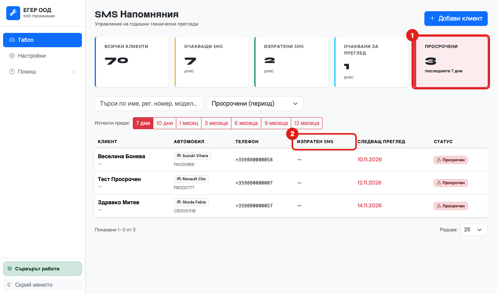
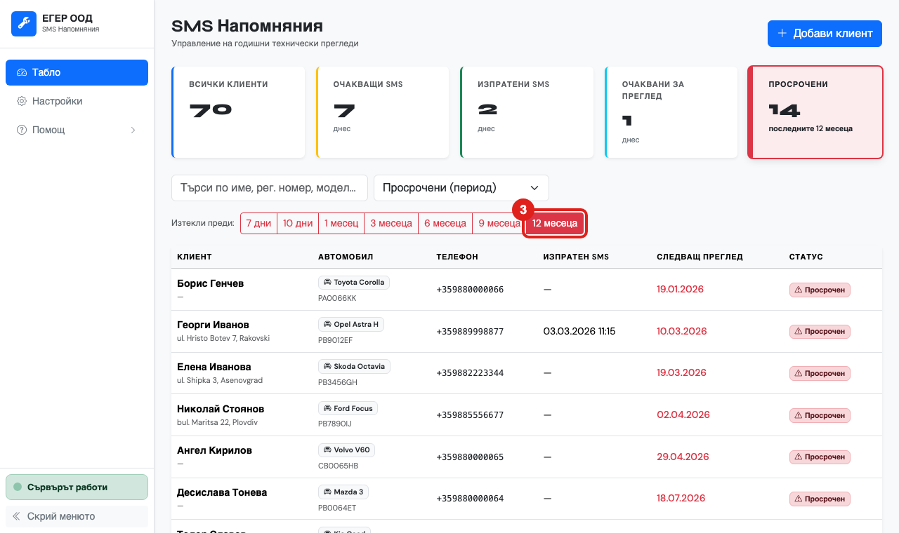
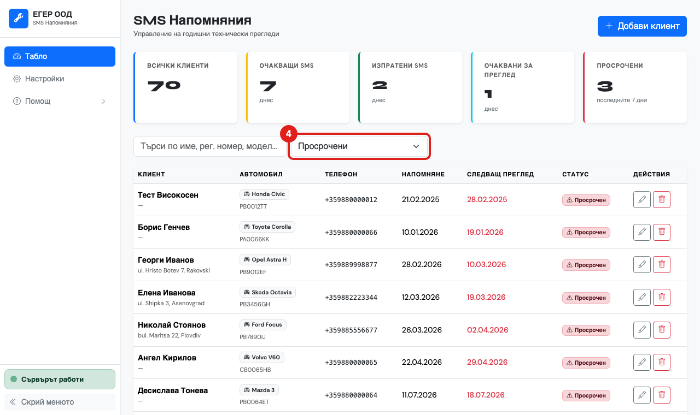

За печат или PDF: натиснете Ctrl + P
Какво значи „Просрочени“
„Просрочен“ = датата в „Следващ преглед“ мина, а нова дата на преглед няма.
Клиентът не е дошъл, или е дошъл, но датата не е написана.
На просрочен клиент SMS не се праща. Не трийте просрочен клиент.
Вижте кой е просрочен

- Щракнете картата Просрочени. 1
В таблицата са клиентите, чийто преглед изтече в последните 7 дни. Датата в „Следващ преглед“ е червена.
- Погледнете колоната „Изпратен SMS“. 2
Има ден и час: клиентът получи SMS, но не дойде. Има „—“: SMS не е пратено.В този списък няма бутони. Той само показва.
Вижте по-стари

- Над таблицата, до „Изтекли преди:“, щракнете 12 месеца. 3
Има и по-къси периоди: от „7 дни“ до „9 месеца“. Числото в картата се сменя с периода.
Просрочени преди повече от 12 месеца

- В полето до Търси… изберете „Просрочени“. 4
Изберете „Просрочени“, не „Просрочени (период)“. Така виждате всички просрочени клиенти, и тези отпреди повече от 12 месеца.Търсите един клиент? Щракнете картата „Всички клиенти“ и напишете номера на колата в „Търси…“ (тема 4, стъпки 1–2).
Клиентът дойде по-късно
- В деня, в който мина прегледа, направете тема 4 („Клиентът мина прегледа“).
Пишете датата на днешния преглед. Програмата добавя 1 година, и статусът става „Очаква“.
Готово. Какво стана?
- Картата, периодите и полето за статус само показват. Те не променят нищо и не пращат SMS.
- Клиентът остава „Просрочен“, докато не напишете нова дата на преглед (тема 4).
- Просроченият клиент остава в списъка. Когато дойде, данните му са там.
Ако нещо не стане
- Няма бутон „Изпрати“ за просрочен клиент.
- Така трябва. SMS се праща само до датата на изтичане, едно на година.
- Клиентът мина прегледа, но е „Просрочен“.
- Новата дата не е написана. Направете тема 4.
- Клиентът не е в списъка на картата „Просрочени“.
- Прегледът му изтече по-рано. Щракнете по-дълъг период (стъпка 3) или изберете „Просрочени“ в полето за статус (стъпка 4).
- Датата в „Следващ преглед“ е днес, но клиентът не е „Просрочен“.
- Така трябва. Клиентът става „Просрочен“ от следващия ден.
- Клиентът ходи в друг сервиз. Да го изтрия ли?
- Не. Оставете го в списъка.